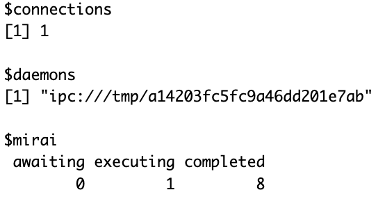
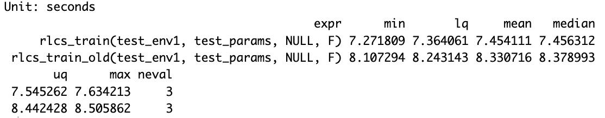
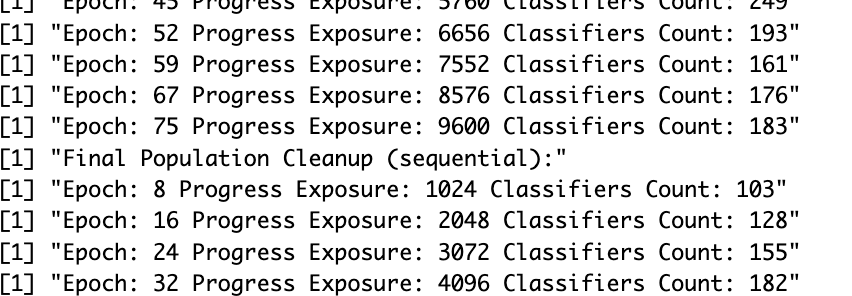

I hinted at the idea last time, and well…
I have actually now have had the time to evaluate (only briefly) the use of the mirai R package and it’s… interesting.
Applied to the RLCS (because, why not), I thought I’d give it a go and use it where I thought it would make a difference… My use-case for today was to address the population cleaning process of the RLCS package, that is (just a bit) slow and very necessary.
But the thing is… Nuanced.
The question is how much I gain with it
Launching a parallel dedicated process like so:
mirai::daemon(1)
mirai::mirai({ <do something here>; }, dependency1=dependency1...)Sounds easy enough, but it becomes quickly complicated to decide when to wait for the result, why, how to sync things… Things of parallel computation that are always fun. But it’s not all.

And yet, supposing I manage (I did, I did), I ran some tests and (duh!) it’s not as simple as it might seem upfront.
So here is the thing:
For large populations, a process to reduce population size (be it sumbsumption, deletion, compaction or what-not) is a bit slower. For small populations however, it is rather fast.
In proportion then, you would want to use a separate process for population size control only if:
it is slow (e.g. large populations)
OR it happens often
(or ideally both)
The trick with this is then that choosing to separate that process into another core/thread is a balancing exercise that can (very easily) prove counter-productive. I know all this because I have just spent half my Sunday afternoon running some tests (profvis and microbenchmark, both handy).
Plus, to be clear, the code is quite a bit messier (yes, even more :D). That said, I do feel it was a very interesting exercise.
So why bother?
Well, here is the thing: Having that separated sub-process run in parallel allows me to decide to run subsumption quite a bit more often, without a real impact to the runtimes.
This means, in the long run, and depending on other parameters (…), smaller populations for matching, and overall faster runtimes then.
But well, it’s not perfect.
Some pictures to support the claims

Here is an example with the Iris dataset, whereby I set things to do a population cleanup every 8th generation. I ran both the new version and the old. Here another screenshot:

So what happening above is: I launch subsumption and deletion processes at every 8th epoch in both cases.
But with a mirai process, I delay consolidation of my population for after the cleanup is finished, and I keep running discovery of new rules in the meatime (roughly, this goes on for 3 or 4 epochs), and then only do I consolidate with the cleaned-up population from 3 (or 4) epochs ago (which is made a bit more complicated, as you might guess, by the rules that might have been discovered in the meantime, which also explains that “Final Population Cleanup (sequential):” message in there).
Where withouth mirai, I have to wait for the same cleanup process to happen before I can continue.
If you stop and review the convoluted explanation above, you might see that: If I “save” 3-4 epochs of processing time associated to the population cleanup, and I clean the population often (say, like here, every 8th epoch), and suppose I want to run this process for a very high number of epochs (which might in some corner cases be warranted), here I’d be saving 3-4 steps every 11-12 steps. Which is a big gain!
Incorrect, though, as I do have an overhead for reconciliation of the two parallel populations (and to be perfectly clear, and honest, right now my implementation also makes some educated simplifications in there).
But what matters to me here is the order of magnitude. 30%. Or say “only” 20%, to account for the overhead of reconciliation (it’s not that hard). That’s not a lot unless you have a very long running process. Then you might start to appreciate it.
(Note: In the case of an iris classifier as above with some chosen hyperparameters, I get 9.96 seconds without mirai, and 7.17 seconds with… Not too bad.)
Conclusion
Population consolidation was never the biggest bottleneck. But it is a slow process in cases of large populations. And the overall matching efforts benefit from a more compact population, so more frequent clean-ups might prove very useful sometimes…
I have yet to test this with my images classifier or the RLCS RL demo use-case. There, I expect to see some more value out of these efforts.
At this time and with the tests I ran this afternoon (rather simple ones with not_bit4, mux6 and the iris dataset), is it worth it? Well… Not really.
But depending on the configurations, I could (I did) get roughly 40% time savings. Not too shabby.
So the balance between cleaner code, one-less-dependency (mirai, which is also a complex dependency, for a package, as I would have to decide how I let my user manage that or not…), and not awfully slow run-times, or slightly better run-times with less readable code, but possibly a key improvement in larger cases…
I’m not 100% sold. I’ll have to keep running tests.
Reference
I looked for things for a while, but last week this showed up. You have to love the R community for these things.